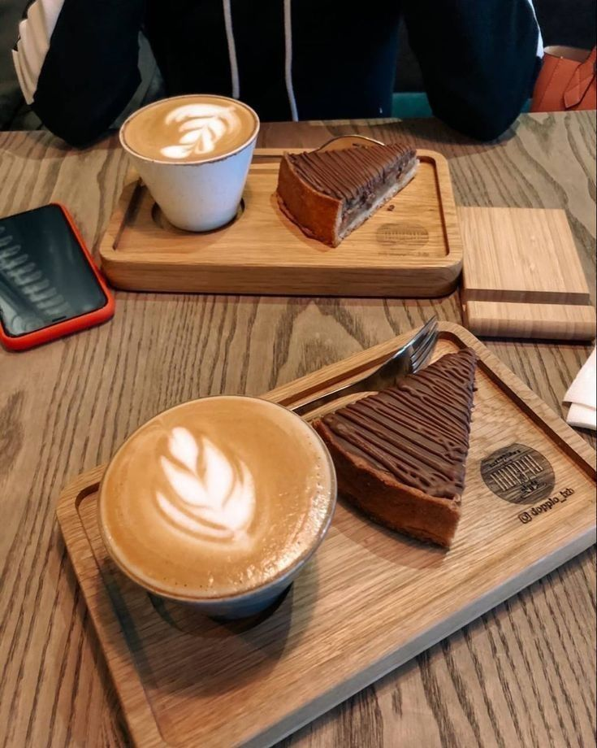
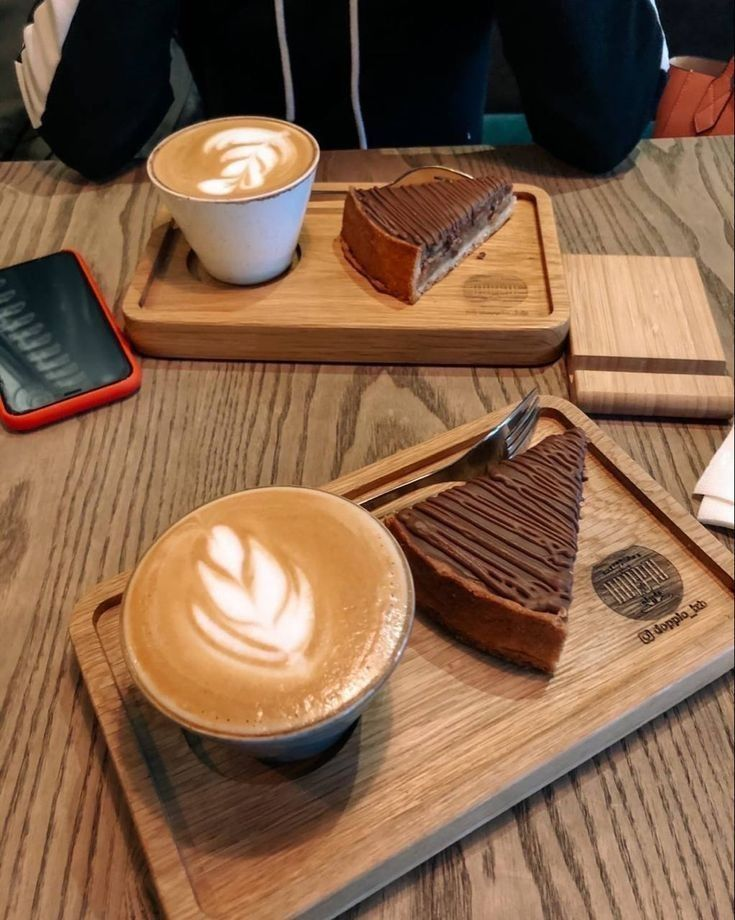
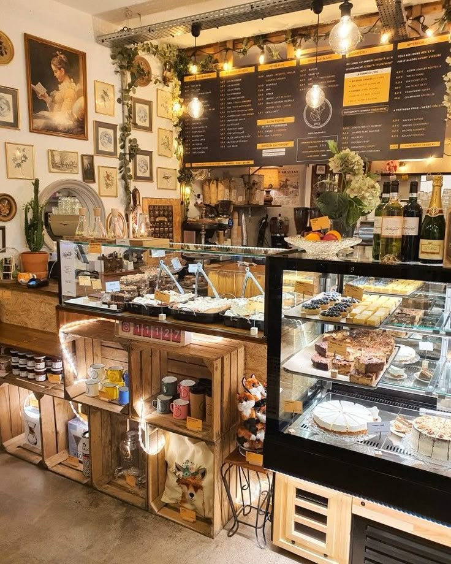
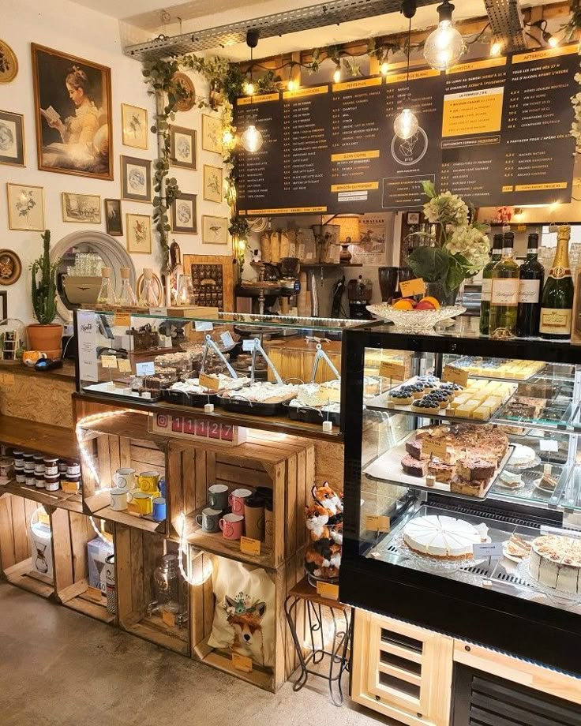

Design Vision
The interior of the coffee shop will be designed to create a comfortable yet motivating atmosphere, a fusion of cozy charm and modern functionality. The space will incorporate deep earthy colors contrasted with warm, ambient lighting and natural materials such as wood, stone, and greenery. This blend evokes a sense of tranquility while promoting creativity and productivity, making it an ideal environment for both relaxation and work.
Mood Board
 

 
